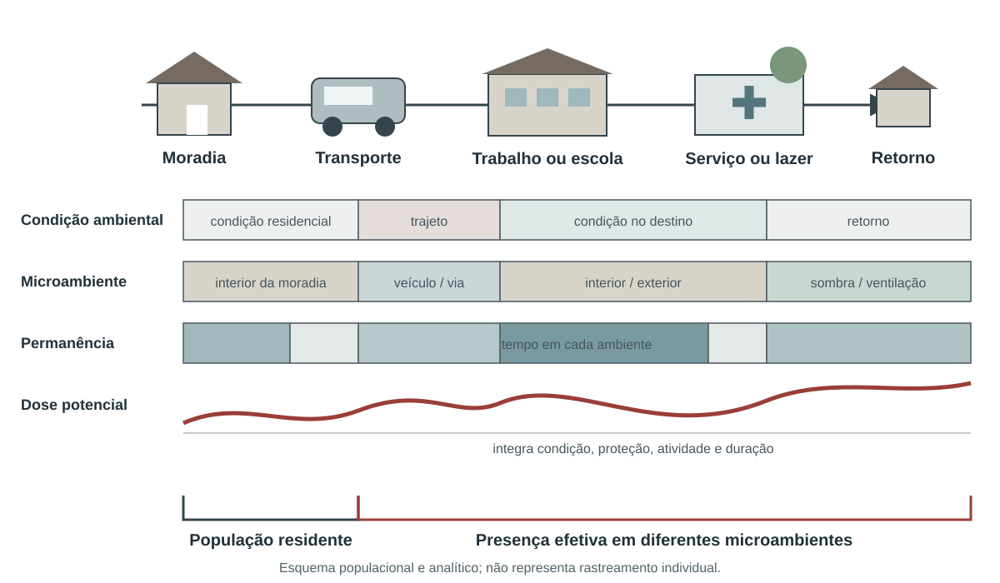

%%{init: {"htmlLabels": false, "flowchart": {"htmlLabels": false}}}%%
flowchart TD
P["Perigo<br/>intensidade, duração, área"] --> E["Exposição<br/>quem, onde, quando"]
V["Vulnerabilidade<br/>suscetibilidade e proteção"] --> R["Risco de efeito"]
E --> R
C["Capacidade de resposta"] -->|reduz ou modifica| R
R --> D["Desfechos observados"]
D --> A["Aprendizado e adaptação"]
A --> C
12 Exposição e vulnerabilidade socioambiental
Essa distinção é operacional. Um bairro pode ter temperatura elevada, mas pouca população presente durante o dia; outro pode registrar temperatura moderadamente menor e concentrar moradias sem ventilação, trabalho ao ar livre, pessoas clinicamente suscetíveis e acesso precário a água e atenção à saúde. Um indicador de perigo isolado favoreceria o primeiro. Um indicador de exposição e uma análise de vulnerabilidade podem mostrar por que o segundo exige maior proteção (World Health Organization, 2021).
A avaliação recomendada pela OMS (Organização Mundial da Saúde) parte de riscos de saúde definidos, descreve populações e regiões afetadas, examina programas existentes e identifica opções de adaptação (World Health Organization, 2021). O processo não deve fabricar um índice único para toda decisão. Deve preservar a cadeia entre perigo, exposição, condições sociais, capacidade de resposta e efeito.
12.1 Exposição individual, populacional e territorial
Exposição individual requer trajetória, duração e intensidade no microambiente. Pode envolver endereço residencial, local de trabalho, deslocamentos, tempo em ambiente interno e medidas pessoais. É a forma mais próxima da experiência real, mas raramente está disponível para toda a população (World Health Organization, 2003).
Exposição populacional combina uma superfície de perigo com uma distribuição de pessoas. O resultado pode ser uma contagem de residentes em área atingida, pessoas-dia, média ponderada pela população ou distribuição por grupos (Matthews et al., 2022; World Health Organization, 2003). Cada construção responde a uma pergunta:
As fichas temáticas anteriores documentam aplicações consolidadas dessas construções: pessoas-dia de ondas de calor na Seção 6.33; PM2,5 (Material particulado com diâmetro aerodinâmico igual ou inferior a 2,5 µm) anual ponderado pela população na Seção 8.8; PM2,5 atribuível à fumaça de incêndios ponderado pela população na Seção 8.11; acesso residencial a área verde na Seção 10.10; e pessoas diretamente afetadas por desastres na Seção 11.10. Esses indicadores não são substituídos por uma ficha genérica de “população exposta”: a definição do perigo, a população, o tempo e o suporte espacial pertencem ao próprio indicador.
12.1.1 O denominador muda a pergunta
Uma contagem de pessoas expostas é indispensável para dimensionar recursos. Uma proporção é necessária para comparar territórios de tamanhos diferentes. Dias por pessoa separam parcialmente o tamanho populacional da persistência do evento. Nenhuma medida deve ser escolhida apenas por produzir um mapa visualmente mais contrastado (International Organization for Standardization, 2023; Organização Pan-Americana da Saúde, 2026).
Se (I_{g,t}) indica exposição na célula (g) e no tempo (t), e (Pop_{g,t}) representa a população, uma estrutura frequente é:
\[ Pessoas\text{-}tempo=\sum_t\sum_g I_{g,t}\times Pop_{g,t} \]
A expressão só é válida depois de definir o que torna (I_{g,t}=1). Para calor, pode ser a participação em uma onda com percentis de máxima e mínima; para inundação, presença na mancha com profundidade mínima; para fumaça, concentração atribuível acima de um critério. Sem a definição do perigo, a fórmula é vazia.
12.1.2 Residência não é presença
Grades populacionais e censos localizam residência habitual. Pessoas trabalham, estudam, cuidam, circulam e podem estar temporariamente deslocadas. A mobilidade é particularmente importante em centros comerciais, áreas turísticas, zonas industriais e rotas de evacuação. Quando não houver dados de presença, o produto deve ser chamado de população residente em área exposta, e não população efetivamente exposta (World Health Organization, 2003, 2021).
O ambiente interno também modifica a exposição. Temperatura de estação não mede o interior da moradia; concentração externa de PM2,5 não equivale à dose inalada; água disponível no setor censitário não assegura continuidade no domicílio. Materiais, ventilação, ar-condicionado, filtros, ocupação, comportamento e interrupções de serviços formam pontes entre a condição ambiental e a experiência humana.
O percurso esquemático da Figura 12.2 reúne essas diferenças sem transformar residência, presença e dose em medidas equivalentes.

Fonte e autoria: elaboração própria. Licença: a mesma dos textos autorais da obra.
12.2 Vulnerabilidade, suscetibilidade e barreiras de proteção
Vulnerabilidade não é essência de uma pessoa, idade, povo ou lugar. Ela é produzida por relações sociais, decisões públicas, discriminação, ocupação do território, condições de trabalho, moradia, renda, redes de cuidado, acesso a informação e disponibilidade de serviços. Dizer que “pessoas idosas são vulneráveis” é insuficiente. É necessário distinguir suscetibilidade fisiológica, doença preexistente, dependência para atividades, isolamento, conforto térmico da moradia, renda, acesso a energia e presença de uma rede de apoio (Solar; Irwin, 2010; World Health Organization, 2021).
O mesmo cuidado vale para raça, cor, etnia, gênero, deficiência, situação migratória e pertencimento a povos e comunidades tradicionais. Essas categorias podem revelar desigualdades persistentes, mas não as causam biologicamente. Racismo ambiental, remoção territorial, barreiras linguísticas, invisibilidade estatística, informalidade do trabalho e menor acesso a políticas são mecanismos que devem aparecer na interpretação (Solar; Irwin, 2010; World Health Organization, 2024).
Lactentes dependem de cuidadores, têm termorregulação distinta e podem ser afetados por interrupções de água, energia, alimentação e atenção. Pessoas idosas formam um grupo heterogêneo; risco pode aumentar com doença cardiovascular ou renal, uso de medicamentos, mobilidade reduzida, isolamento e residência sem resfriamento. Idade deve ser desagregada em faixas pertinentes e combinada com condições de proteção, sem converter um ponto de corte administrativo em diagnóstico individual (World Health Organization, 2021, 2024).
Doenças cardiovasculares, respiratórias, renais, metabólicas e neurológicas podem modificar a resposta ao calor, à poluição e a interrupções de cuidado. A continuidade de medicamentos, oxigênio, diálise, refrigeração de insumos e transporte é parte da exposição funcional durante emergências. Deficiência não equivale automaticamente a dependência, mas barreiras físicas, comunicacionais e atitudinais podem impedir acesso a alertas, abrigos, evacuação e serviços.
Dados de saúde individual exigem proteção de confidencialidade. Mapas de pequenos números ou condições raras podem identificar pessoas. Quando a finalidade for planejamento local, controles de acesso e divulgação agregada devem ser definidos antes da vinculação das bases.
Ocupação determina local, horário, esforço, vestimenta, proteção e capacidade de interromper a atividade. Trabalhadores rurais, da construção, limpeza urbana, transporte, cozinha, indústria e resposta a emergências podem enfrentar calor, fumaça, radiação e contaminantes em condições que a residência não revela. Informalidade e remuneração por produção reduzem a autonomia para fazer pausas (World Health Organization, 2024, 2025). O WBGT (Temperatura de Globo e Bulbo Úmido) da Seção 6.31 ilustra por que a avaliação ocupacional deve combinar ambiente, carga metabólica, vestimenta, aclimatação e organização do trabalho.
Território, água, alimento, mobilidade, práticas culturais e autonomia são dimensões inseparáveis da saúde. Indicadores baseados apenas em renda domiciliar podem omitir perdas territoriais, contaminação, restrição de acesso a recursos e impactos sobre modos de vida. A análise deve respeitar direitos coletivos, consulta, governança dos dados e conhecimento local. A ausência de registros em sistemas nacionais não autoriza concluir ausência de exposição ou efeito (World Health Organization, 2023, 2024).
A análise de vulnerabilidade precisa explicitar o mecanismo que liga uma condição ao dano. Idade pode modificar termorregulação ou dependência de cuidado; deficiência pode interagir com barreiras de comunicação e evacuação; trabalho define lugar, esforço e autonomia; renda influencia acesso a proteção; discriminação distribui exposição e recursos. Listar categorias sem mecanismo produz rótulo, não explicação. O mecanismo orienta a ação e indica quais dados adicionais são necessários (Solar; Irwin, 2010; World Health Organization, 2021).
A categoria usada para desagregar precisa corresponder à finalidade. Faixas etárias administrativas podem ser úteis para cobertura de políticas e insuficientes para fisiologia. Diagnóstico registrado pode identificar necessidade clínica e omitir pessoas sem acesso. Ocupação formal pode excluir trabalho informal. Endereço pode localizar residência e omitir deslocamento. A análise deve documentar quem aparece, quem é aproximado e quem permanece invisível (World Health Organization, 2023, 2024).
A interseção de condições também importa. Uma pessoa pode depender de equipamento elétrico, morar em área quente e enfrentar interrupção de energia; outra pode trabalhar ao ar livre, usar transporte demorado e residir em bairro com pouca água. Somar características em um escore não revela necessariamente essas dependências. Matrizes de perfis e cenários preservam combinações relevantes e permitem associar respostas específicas.
Vulnerabilidade territorial não significa homogeneidade interna. Setores e municípios reúnem pessoas, moradias e capacidades distintas. Taxas e índices apoiam priorização, mas precisam ser acompanhados por distribuição, componentes e validação local. Um território classificado com menor privação média ainda pode conter instituições, ocupações ou grupos com alto risco. A decisão deve evitar excluir pessoas por estarem fora da classe predominante (Openshaw, 1984; World Health Organization, 2024).
Dados sensíveis exigem minimização. A pergunta deve definir o menor detalhamento necessário, quem pode acessar, por quanto tempo e com qual forma de divulgação. Pequenos números, condições raras, localização de povos e dependência tecnológica podem produzir reidentificação ou dano coletivo. Agregação e supressão reduzem risco, mas também podem apagar desigualdades; por isso, acesso protegido para ação local e publicação agregada podem ter desenhos diferentes.
Participação não é apenas validação final do mapa. Comunidades e trabalhadores podem identificar horários, rotas, barreiras, recursos e efeitos que os cadastros omitem. Sua contribuição deve ter consequência documentada sobre indicador, interpretação ou resposta. Consulta sem possibilidade de alterar a decisão oferece aparência de reconhecimento sem redistribuir poder (World Health Organization, 2024).
O produto final deve ligar perfil a proteção. Para cada mecanismo priorizado, registre população, evidência, ação, responsável, recurso, antecedência, canal, cobertura e critério de avaliação. Essa matriz transforma vulnerabilidade em hipótese modificável e reduz o risco de publicar ordenações sem resposta.
12.3 Moradia e infraestrutura cotidiana
Moradia liga perigos externos à exposição real. Cobertura e paredes, densidade de ocupação, ventilação, umidade, acesso a água e saneamento, estabilidade da posse, custo e localização influenciam calor interno, contaminação, possibilidade de permanecer em casa e capacidade de recuperar perdas (United Nations Statistics Division, 2024; World Health Organization, 2021).
O indicador ODS (Objetivo de Desenvolvimento Sustentável) 11.1.1 é uma medida consolidada de privação habitacional urbana. Ele reúne população em assentamentos precários ou informais e moradia inadequada, segundo componentes publicados (United Nations Human Settlements Programme, 2020; United Nations Statistics Division, 2024). Sua utilidade aumenta quando cada privação é apresentada separadamente. Um total de 30% não informa se predomina adensamento, falta de saneamento, insegurança de posse ou custo excessivo — problemas que exigem intervenções diferentes.
12.4 Índices compostos
Índices compostos são úteis para triagem territorial quando sua arquitetura é pública. Também comprimem decisões: escolha de variáveis, transformação, peso, direção e universo de comparação. Dois índices com o mesmo nome podem medir realidades diferentes (Organisation for Economic Co-operation and Development; European Union; European Commission. Joint Research Centre, 2008).
O IVS (Índice de Vulnerabilidade Social) do Ipea (Instituto de Pesquisa Econômica Aplicada) foi construído para o Brasil e combina 16 indicadores em infraestrutura urbana, capital humano e renda e trabalho (Costa; Marguti, 2015; Marguti et al., 2018). O CDC (Centers for Disease Control and Prevention)/ATSDR (Agência para Substâncias Tóxicas e Registro de Doenças (Agency for Toxic Substances and Disease Registry)) SVI (Índice de Vulnerabilidade Social (Social Vulnerability Index)) usa 16 variáveis e classificações percentílicas em quatro temas para planejamento de saúde pública e emergências nos Estados Unidos (Agency for Toxic Substances and Disease Registry, 2024; Flanagan et al., 2011). O primeiro produz uma escala normalizada ancorada em parâmetros metodológicos; o segundo classifica posições relativas no universo da edição. Eles não são intercambiáveis.
AvisoO que não fazer
Não somar perigo, exposição, vulnerabilidade e capacidade em um escore único apenas porque todas as camadas foram normalizadas entre zero e um. A operação pode compensar uma exposição extrema por um valor social baixo e ocultar justamente o território que exige ação.
Quando um índice composto for usado, o painel deve permitir abrir:
- O escore total;
- Dimensões;
- Componentes originais;
- Ano e fonte;
- Erro ou qualidade;
- Mudanças de limites territoriais;
- Critério de prioridade.
12.5 Principais indicadores usados em saúde pública e gestão de riscos
Os indicadores consolidados de exposição e vulnerabilidade podem ser organizados por função, sem transformá-los em uma lista genérica:
| Função | Indicadores consolidados | Aplicação | Limite principal |
|---|---|---|---|
| Quantificar alcance do perigo | pessoas expostas, pessoas-dia, dias por pessoa e médias ponderadas, definidos dentro de cada fenômeno | Dimensionar população e duração | Dependem da definição do perigo e da população |
| Caracterizar privação social no Brasil | IVS e suas três dimensões | Planejamento e estratificação territorial | Não contém perigo climático |
| Apoiar emergências nos Estados Unidos | CDC/ATSDR SVI, temas e variáveis | Saúde pública e resposta a desastres | Não é transferível diretamente ao Brasil |
| Descrever moradia urbana inadequada | ODS 11.1.1 e componentes | Habitação, saneamento, saúde e resiliência | A união composta oculta privações específicas |
| Identificar grupos com maior suscetibilidade | distribuição por idade, condição de saúde, deficiência, ocupação e demais categorias pertinentes | Busca ativa e desenho de proteção | Categorias não explicam os processos sociais |
| Medir proteção e resposta | indicadores do Capítulo 14 | Capacidade de antecipar, manter e recuperar serviços | Existência documental não garante funcionamento |
As três fichas a seguir documentam medidas publicadas que podem apoiar análise territorial. Os indicadores de exposição específicos permanecem nos capítulos dos respectivos fenômenos.
12.6 Ficha do indicador: Índice de Vulnerabilidade Social do Ipea (IVS)
Código: EXP-VUL-01
Título resumido: Índice de Vulnerabilidade Social — IVS
Tema: Exposição e vulnerabilidade socioambiental
Dimensão: vulnerabilidade
Disponibilidade: dados secundários requer harmonização territorial
Identificação e fundamento
Base de consolidação. Atlas da Vulnerabilidade Social e relatórios metodológicos do Instituto de Pesquisa Econômica Aplicada.
Objetivo
Evidenciar falhas de oferta de bens e serviços e condições sociais que limitam bem-estar e oportunidades nos territórios brasileiros.
Interpretação
Quanto mais próximo de 1, maior a vulnerabilidade social segundo o conjunto do IVS. As faixas originais são muito baixa de 0 a <0,200; baixa de 0,200 a <0,300; média de 0,300 a <0,400; alta de 0,400 a <0,500; e muito alta de 0,500 a 1.
Usos
- Descrever desigualdades territoriais brasileiras.
- Apoiar priorização de políticas e programas.
- Estratificar análises de efeitos climáticos e ambientais.
- Examinar separadamente infraestrutura
- Capital humano e renda e trabalho.
Limitações
- Não inclui o perigo climático nem a exposição ambiental.
- O valor agregado pode ocultar componentes com sentidos distintos.
- Versões baseadas em Censo e PNAD têm granularidade e erro diferentes.
- Não deve ser interpretado como atributo de indivíduos nem como explicação causal.
Fontes de dados
Método de cálculo
Obter os 16 indicadores da edição escolhida. Transformar cada componente para escala entre 0 e 1 pelos parâmetros metodológicos do Ipea, invertendo o sentido quando necessário para que valor maior represente maior vulnerabilidade. Calcular cada dimensão pela agregação ponderada publicada e o IVS como média aritmética dos três subíndices. Não recalibrar extremos ou pesos sem caracterizar um novo índice.
\[ IVS=\frac{IVS_{infraestrutura}+IVS_{capital\ humano}+IVS_{renda\ e\ trabalho}}{3} \]
Numerador. Soma dos três subíndices oficiais.
Denominador. Três dimensões.
Unidade de medida. Índice adimensional de 0 a 1.
Variáveis e categorias de análise. 16 componentes; três dimensões; faixas de IVS; município, unidade da Federação e demais recortes; sexo, cor e situação do domicílio nas edições disponíveis.
Granularidade. Recorte territorial e populacional disponibilizado na edição.
Periodicidade de atualização. Conforme a publicação de novas edições pelo Ipea.
Responsabilidade gerencial. Instituição estatística ou responsável pelo índice, com equipes de vigilância, planejamento e participação social responsáveis pela interpretação e uso.
Notas. Índices compostos devem ser publicados com todos os componentes. O escore apoia priorização, mas não substitui escuta local, análise de direitos, conhecimento territorial nem avaliação do perigo específico.
Análise descritiva do indicador. Apresentar IVS, três dimensões e componentes; mapear valores e variações; cruzar com perigos sem somá-los ao índice; mostrar populações e recursos presentes no território.
Campos complementares para clima, ambiente e saúde
Unidade territorial. Brasil, unidade da Federação, município, região metropolitana ou unidade de desenvolvimento humano, conforme a base.
Resolução espacial original. A do Censo, Atlas ou levantamento amostral usado; não interpolar valores amostrais para pequenas áreas.
Resolução temporal. Ano censitário ou período de referência da pesquisa domiciliar.
Período de referência. O ano do Censo ou da PNAD Contínua da edição; registrar ajustes de compatibilização.
Limiar ou valor de referência. Muito baixa <0,200; baixa 0,200–<0,300; média 0,300–<0,400; alta 0,400–<0,500; muito alta ≥0,500.
Disponibilidade e acesso
Cobertura geográfica. Brasil, conforme os recortes da edição do Atlas.
Período disponível. Censos 2000 e 2010 no Atlas original e atualizações conforme PNAD Contínua e Censo 2022.
Periodicidade de atualização. Conforme a publicação de novas edições pelo Ipea.
Forma de acesso. Consulta e obtenção de arquivos no Atlas e no repositório do Ipea.
URL ou identificador persistente. http://repositorio.ipea.gov.br/handle/11058/9451
Formato dos arquivos. Tabelas, planilhas, mapas e relatórios.
Necessidade de processamento. Selecionar edição, harmonizar códigos territoriais, preservar componentes e incorporar erro amostral quando aplicável.
Qualidade, comparação e saúde
Qualidade e incerteza. Documentar fonte, ano, universo, erro amostral, imputação, variáveis, sentido, normalização, pesos, edição, limites territoriais e impacto de valores pequenos ou ausentes.
Possibilidade de comparação. Comparar somente valores calculados com a mesma edição, universo, componentes, pesos e território; índices relativos podem mudar mesmo sem alteração absoluta de uma localidade.
Relação com desfechos de saúde. Privação material, discriminação, barreiras de acesso e menor capacidade de proteção modificam exposição, suscetibilidade e recuperação diante de perigos climáticos e ambientais.
Defasagens temporais relevantes. A vulnerabilidade medida em Censo ou pesquisa domiciliar refere-se a uma data ou período anterior; registrar a distância temporal até o evento e mudanças posteriores.
Aplicação na gestão. Orientar busca ativa, comunicação acessível, localização de recursos, proteção social e planejamento intersetorial, sem rotular pessoas ou territórios como portadores naturais de vulnerabilidade.
Referências metodológicas
12.7 Ficha do indicador: Índice de Vulnerabilidade Social do CDC/ATSDR (SVI)
Código: EXP-VUL-02
Título resumido: CDC/ATSDR Social Vulnerability Index — SVI
Tema: Exposição e vulnerabilidade socioambiental
Dimensão: vulnerabilidade
Disponibilidade: dados secundários requer harmonização territorial
Identificação e fundamento
Base de consolidação. SVI do Centers for Disease Control and Prevention e da Agency for Toxic Substances and Disease Registry para planejamento de saúde pública e emergências nos Estados Unidos.
Objetivo
Identificar comunidades estadunidenses que provavelmente necessitarão de maior apoio antes, durante e depois de eventos perigosos.
Interpretação
O percentil varia de 0 a 1; valor próximo de 1 indica posição relativa de maior vulnerabilidade dentro do universo geográfico e da edição. Não expressa probabilidade de dano nem diferença absoluta constante.
Usos
- Planejamento de emergência em saúde pública.
- Distribuição territorial de apoio e comunicação.
- Estratificação de análises de desastres nos Estados Unidos.
- Referência metodológica para construção transparente de índices relativos.
Limitações
- Variáveis e categorias são específicas dos Estados Unidos.
- Percentis dependem do universo comparado.
- A soma de postos descarta distâncias absolutas entre valores.
- Transpor o SVI ao Brasil exigiria novo desenvolvimento e validação
- Não simples tradução.
Fontes de dados
- CDC/ATSDR Social Vulnerability Index — percentis por variável, tema e total e documentação da edição (cadastro)
Método de cálculo
Para cada uma das 16 variáveis, ordenar as unidades e calcular o percentil como posto menos um dividido pelo número de unidades menos um, com sentido orientado para maior vulnerabilidade. Somar os postos das variáveis de cada tema e reclassificar a soma em percentil temático. Somar os postos das 16 variáveis e reclassificar em percentil geral, seguindo o tratamento de estimativas e valores ausentes da edição.
\[ Percentil_i=\frac{posto_i-1}{N-1};\qquad SVI_i=Percentil\left(\sum_{j=1}^{16}posto_{ij}\right) \]
Numerador. Posto da unidade menos um no cálculo de cada percentil.
Denominador. Número de unidades válidas menos um.
Unidade de medida. Percentil relativo de 0 a 1.
Variáveis e categorias de análise. 16 variáveis e quatro temas — situação socioeconômica; características do domicílio; condição racial e de minoria étnica; tipo de moradia e transporte — conforme a edição 2022.
Granularidade. Setor censitário e condado ou equivalentes da edição.
Periodicidade de atualização. Por edição do CDC/ATSDR.
Responsabilidade gerencial. Instituição estatística ou responsável pelo índice, com equipes de vigilância, planejamento e participação social responsáveis pela interpretação e uso.
Notas. Índices compostos devem ser publicados com todos os componentes. O escore apoia priorização, mas não substitui escuta local, análise de direitos, conhecimento territorial nem avaliação do perigo específico.
Análise descritiva do indicador. Exibir percentil geral, quatro temas e 16 variáveis, incerteza censitária e estabilidade entre edições; evitar mapas que só rotulem o quartil mais alto.
Campos complementares para clima, ambiente e saúde
Unidade territorial. Unidades censitárias dos Estados Unidos.
Resolução espacial original. Census tract e county ou equivalentes.
Resolução temporal. Edição vinculada a Censo ou estimativas quinquenais da American Community Survey.
Período de referência. Ano e fonte declarados na edição; SVI 2022 usa documentação própria.
Limiar ou valor de referência. Não há ponto de corte universal; quartis ou percentis altos são classificações relativas e devem ser declarados.
Disponibilidade e acesso
Cobertura geográfica. Estados Unidos e áreas incluídas na edição.
Período disponível. Edições desde 2000, não necessariamente comparáveis sem harmonização.
Periodicidade de atualização. Por edição do CDC/ATSDR.
Forma de acesso. Obtenção pública de bases e bancos de dados geográficos.
URL ou identificador persistente. https://stacks.cdc.gov/view/cdc/157287
Formato dos arquivos. CSV, geodatabase e documentação PDF.
Necessidade de processamento. Selecionar edição, tratar campos de qualidade, manter universo e identificar percentis já publicados; não recalcular com subconjunto sem mudar a referência.
Qualidade, comparação e saúde
Qualidade e incerteza. Documentar fonte, ano, universo, erro amostral, imputação, variáveis, sentido, normalização, pesos, edição, limites territoriais e impacto de valores pequenos ou ausentes.
Possibilidade de comparação. Comparar somente valores calculados com a mesma edição, universo, componentes, pesos e território; índices relativos podem mudar mesmo sem alteração absoluta de uma localidade.
Relação com desfechos de saúde. Privação material, discriminação, barreiras de acesso e menor capacidade de proteção modificam exposição, suscetibilidade e recuperação diante de perigos climáticos e ambientais.
Defasagens temporais relevantes. A vulnerabilidade medida em Censo ou pesquisa domiciliar refere-se a uma data ou período anterior; registrar a distância temporal até o evento e mudanças posteriores.
Aplicação na gestão. Orientar busca ativa, comunicação acessível, localização de recursos, proteção social e planejamento intersetorial, sem rotular pessoas ou territórios como portadores naturais de vulnerabilidade.
Referências metodológicas
12.8 Ficha do indicador: Proporção da população urbana em assentamentos precários, informais ou moradia inadequada (ODS 11.1.1)
Código: EXP-HAB-01
Título resumido: População urbana em moradia inadequada — ODS 11.1.1
Tema: Exposição e vulnerabilidade socioambiental
Dimensão: vulnerabilidade
Disponibilidade: dados secundários requer harmonização territorial
Identificação e fundamento
Base de consolidação. Metadados do indicador 11.1.1 dos Objetivos de Desenvolvimento Sustentável, sob custódia do UN-Habitat.
Objetivo
Monitorar privação habitacional urbana relevante para segurança, saúde, exposição ambiental e capacidade de proteção.
Interpretação
Valor maior indica maior parcela da população urbana afetada por ao menos uma das condições abrangidas. O total composto deve vir acompanhado das parcelas por água, saneamento, espaço, durabilidade, segurança da posse e custo da moradia.
Usos
- Monitorar a meta ODS 11.1.
- Identificar privações habitacionais que agravam calor
- Inundação e contaminação.
- Planejar habitação
- Saneamento e saúde de forma intersetorial.
Limitações
- A união de componentes não informa quantas privações cada domicílio acumula.
- Segurança da posse e moradia inadequada têm disponibilidade desigual.
- Definições nacionais podem diferir dos metadados globais.
- O indicador não mede temperatura interna
- Inundação efetiva ou qualidade construtiva detalhada.
Fontes de dados
Método de cálculo
Classificar cada domicílio urbano segundo os critérios publicados. Considerar a população residente em domicílio com uma ou mais privações de assentamento precário ou informal — água melhorada, saneamento melhorado, área suficiente, durabilidade e segurança da posse — ou com condição de moradia inadequada, incluindo custo excessivo quando disponível. Somar as pessoas classificadas e dividir pela população urbana total. Publicar cada componente e a interseção quando os microdados permitirem.
\[ ODS11.1.1=100\times\frac{População\ urbana\ em\ domicílio\ com\ ao\ menos\ uma\ condição}{População\ urbana\ total} \]
Numerador. População urbana residente em assentamento precário, informal ou moradia inadequada.
Denominador. População urbana total.
Unidade de medida. Percentual (%).
Variáveis e categorias de análise. Água; saneamento; adensamento; durabilidade; segurança da posse; custo da moradia; sexo, idade, deficiência, raça ou cor e território quando disponíveis.
Granularidade. Pessoa e domicílio nos microdados; território no indicador agregado.
Periodicidade de atualização. Segundo Censo, pesquisa e ciclo de reporte dos ODS.
Responsabilidade gerencial. Instituição estatística ou responsável pelo índice, com equipes de vigilância, planejamento e participação social responsáveis pela interpretação e uso.
Notas. Índices compostos devem ser publicados com todos os componentes. O escore apoia priorização, mas não substitui escuta local, análise de direitos, conhecimento territorial nem avaliação do perigo específico.
Análise descritiva do indicador. Mostrar total, cada privação, número de privações acumuladas, população afetada e distribuição territorial; relacionar a perigos específicos sem incorporar o perigo ao indicador habitacional.
Campos complementares para clima, ambiente e saúde
Unidade territorial. Área urbana e seus recortes estatísticos.
Resolução espacial original. A do Censo ou pesquisa; amostras não devem ser divulgadas abaixo de sua precisão.
Resolução temporal. Ano censitário ou da pesquisa domiciliar.
Período de referência. Data de referência da fonte domiciliar e edição dos metadados ODS.
Limiar ou valor de referência. Ao menos uma privação definida; custo habitacional superior a 30% da renda mensal do domicílio na operacionalização internacional de inadequação por acessibilidade econômica.
Disponibilidade e acesso
Cobertura geográfica. Global no ODS e Brasil nas fontes nacionais compatíveis.
Período disponível. Conforme Censos, pesquisas nacionais e série publicada na base ODS.
Periodicidade de atualização. Segundo Censo, pesquisa e ciclo de reporte dos ODS.
Forma de acesso. Base global ODS e microdados ou tabelas do IBGE.
URL ou identificador persistente. https://unstats.un.org/sdgs/metadata/files/Metadata-11-01-01.pdf
Formato dos arquivos. Tabela ODS, planilhas, microdados e documentação.
Necessidade de processamento. Harmonizar definições, construir condições no domicílio, evitar dupla contagem de pessoas e estimar erro amostral.
Qualidade, comparação e saúde
Qualidade e incerteza. Documentar fonte, ano, universo, erro amostral, imputação, variáveis, sentido, normalização, pesos, edição, limites territoriais e impacto de valores pequenos ou ausentes.
Possibilidade de comparação. Comparar somente valores calculados com a mesma edição, universo, componentes, pesos e território; índices relativos podem mudar mesmo sem alteração absoluta de uma localidade.
Relação com desfechos de saúde. Privação material, discriminação, barreiras de acesso e menor capacidade de proteção modificam exposição, suscetibilidade e recuperação diante de perigos climáticos e ambientais.
Defasagens temporais relevantes. A vulnerabilidade medida em Censo ou pesquisa domiciliar refere-se a uma data ou período anterior; registrar a distância temporal até o evento e mudanças posteriores.
Aplicação na gestão. Orientar busca ativa, comunicação acessível, localização de recursos, proteção social e planejamento intersetorial, sem rotular pessoas ou territórios como portadores naturais de vulnerabilidade.
Referências metodológicas
12.9 Múltiplas exposições
Pessoas podem enfrentar calor, fumaça, interrupção de energia e falta de água no mesmo período. A coincidência pode ser:
Contar camadas sobrepostas é um começo, não uma estimativa de efeito conjunto. Interações biológicas, trajetórias temporais e correlação entre medidas precisam de desenho analítico. Um mapa de “quatro exposições” não informa se os efeitos se somam, multiplicam ou se uma camada é apenas proxy da outra (Cissé et al., 2022; Organisation for Economic Co-operation and Development; European Union; European Commission. Joint Research Centre, 2008).
Uma matriz de coocorrência é mais transparente do que um escore arbitrário. Linhas podem representar territórios; colunas, exposições definidas; células, intensidade, duração ou presença. A gestão pode então priorizar combinações relevantes — por exemplo, calor forte, interrupção de energia e alta concentração de pessoas que dependem de equipamentos elétricos — sem perder o significado de cada variável.
12.10 Mapas de risco e incerteza
Mapas são instrumentos de análise e decisão, não fotografias neutras. Unidade territorial, classificação, paleta, escala e ausência de dados alteram a mensagem. Percentis destacam posição relativa; limites absolutos mostram cumprimento de referência; números absolutos dimensionam recursos; taxas e proporções apoiam comparação (International Organization for Standardization, 2023; Openshaw, 1984).
O problema da unidade de área modificável e a falácia ecológica, discutidos no capítulo 4, são centrais. Um setor censitário de alta vulnerabilidade contém diversidade interna. Uma associação territorial não prova que toda pessoa ali tenha a condição média. Para evitar estigmatização:
- Nomeie a condição, não o território como essência;
- Mostre recursos, organizações e capacidades locais;
- Inclua incerteza e ausência de dados;
- Use mapas de componentes junto ao índice;
- Valide interpretações com equipes e comunidades;
- Registre quem pode acessar camadas sensíveis.
12.11 Da descrição à proteção
O produto mínimo de uma análise de exposição e vulnerabilidade deve responder:
- Qual perigo, intensidade, duração e período foram usados;
- Qual população ou ativo foi considerado presente;
- Quais condições modificam suscetibilidade e proteção;
- Qual data e resolução têm as fontes;
- Quem está invisível ou mal representado;
- Que ação concreta cada achado pode acionar;
- Quem tem responsabilidade e recurso para agir;
- Como a ação será acompanhada.
Priorizar não significa apenas ordenar territórios. Pode significar ampliar antecedência do alerta, oferecer mensagem em formatos acessíveis, garantir água e energia, ajustar jornada de trabalho, organizar transporte, proteger medicamentos, abrir pontos de apoio ou intensificar vigilância. O valor do indicador está na ligação explícita entre uma condição mensurada, um direito e uma resposta possível (World Health Organization, 2021, 2024).
12.12 Síntese
Exposição depende de presença, duração e microambiente; vulnerabilidade resulta de processos que alteram suscetibilidade e proteção. Mapas e índices só orientam ação quando preservam componentes, incertezas e populações mal representadas e quando cada prioridade é ligada a uma medida concreta de proteção.